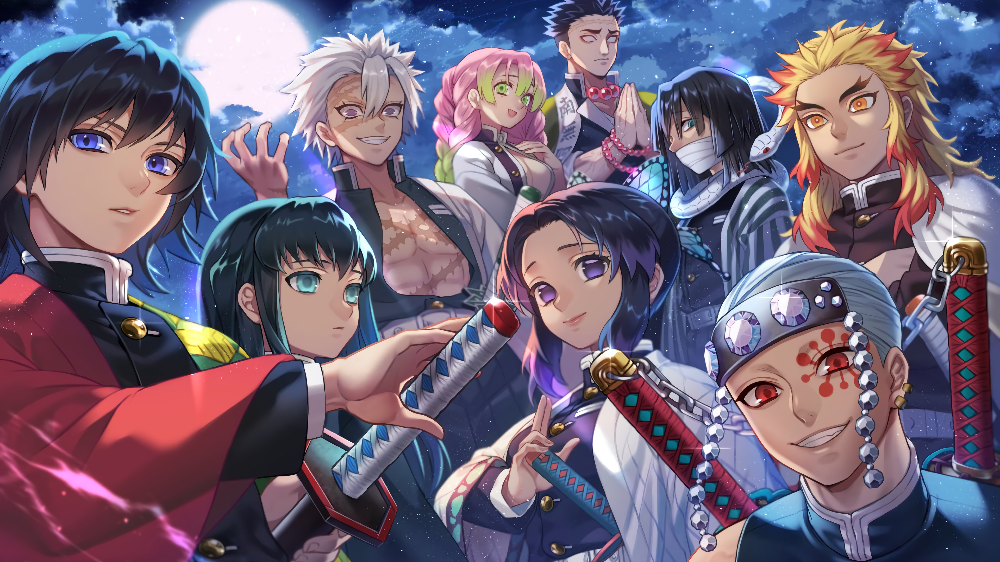

About Mitsuri Kanroji
Mitsuri Kanroji is the Love Hashira in Demon Slayer, known for her strength, agility and kind-hearted nature. She uses the Love Breathing technique in battle and is dedicated to protecting others, despite her cheerful and gentle demeanor.
The Hashiras
Mitsuri's characteristics
- Mitsuri Kanroji is the Love Hashira in the Demon Slayer Corps.
- She wields the Love Breathing technique, focusing on speed and agility.
- Known for her cheerful, caring, and compassionate personality.
Mitsuri's friends
Mitsuri Kanroji has close bonds with several demon slayers including tanjiro Kamado,Nezuko and the other hashiras.She is particularly supportive of Tanjiro, often offering encouragement and a kind heart. click on the links below to read more about them: